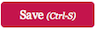

Report Cards
The Report Cards tab offers school administrators and teachers a convenient, centralized way to activate report cards and make them available to students and their families in .pdf format. Report cards can be organized according to the comprehensive list of students for the whole school, or by a select number of subjects. In addition, they can be customized to reflect different criteria for different subjects.
A video tutorial giving an overview of the Report Cards section and how to utilize its main features can be viewed in two parts, as follows:
This chapter offers detailed information about how to configure report card information in QuickSchools. Features described include how to set up report cards with different templates for specific subjects, how to view and activate report cards so they appear in student records, how to submit final grades on behalf of teachers, and how to edit and lock report cycles.
- Accessing Report Cards Tab
- Selecting Report Cards
- Displaying and Managing Student Records
- Search Feature
- Displaying Student Records in Reverse Alphabetical Order
- Modifying Page Display to Change Numbers of Rows Per Page
- Editing and Downloading Report Cards
- Activating and Deactivating Report Cards
- Subject-Based Grading
Accessing Report Cards Tab
To access the Report Cards section of QuickSchools from your login page, click on the Report Cards link in the green bar at the top of the screen, as shown:

This will bring up the main Report Cards page, on which you will see up to four different menu tabs:
- Report Cards
- Subject-Based
- Setup Report Cards
- Setup Subject-Specific Criteria (as shown below)

The Report Cards tab contains a list of all students in the school. From this page, you can view end-of-year report cards associated with an individual student for different terms, download report cards, and activate and deactivate report cards to connect them to student records.
Selecting Report Cards
First, check to see which type of report card (here End-of-Term Report Card) and for which term (here 2012/2013, Current Semester) the report cards are being listed. This information is located directly below the large red Report Cards header on the left side of the page, and may be changed by clicking on the Change link that appears directly to the right of the report card type.

The status line indicating whether or not report cards are locked and read-only appears directly below the bolded type of report card listed at the top of the page. If the status is not indicated, the report cards are editable. This status may only be changed by users with privileges enabling them to have access to managing report cards through the Setup Report Cards tab on this page, as described later in this chapter.
Displaying and Managing Student Records
The list of students appearing on the Report Cards tab may be modified using the search feature to show just a subset of students, displayed in reverse alphabetical order, or repaginated to include more records on the page.
Search Feature
The search feature may be used to select a student record, or subset of student records for which you would like to see report cards. You may search using the name of the student, or by grade level by entering the numerical grade in the search box, as shown in the example below:
To clear the search and return to the comprehensive list of students, click on the Clear Search link under the search box.
Displaying Student Records in Reverse Alphabetical Order
It is easy to display student records in reverse alphabetical order; click once on the dark green border labeled Student next to the white triangle and it will reverse to list them from "Z" to "A."
Modifying Page Display to Change Number of Rows Per Page
The number of student records displayed on the screen may be set and/or customized by clicking on this icon
( ) in the very last row
in the table. This reveals the following selection menu:
) in the very last row
in the table. This reveals the following selection menu:

As indicated, the default setting is to display 10 rows on the screen; additional rows will then be shown on subsequent screens. You may change this to enable viewing of 25, 50, or 100 column categories at a time. The number of rows can also be customized to select all records by selecting the Custom selection, in which case you will be prompted to fill in the desired number of rows to be made visible per page by the following popup box:

Enter the desired number of rows to display and click on the OK button ( )
to save your preference.
)
to save your preference.
Finally, to restore the selection to the default, select Clear Preferences from the selection menu. This will erase any prior selection you may have made and revert to the default view of the list of student records on the Report Cards tab.
Editing and Downloading Report Cards
Now that your display is showing the records you are interested in, you can view, edit and download a single report card by clicking on the appropriate row, or you can select multiple records on the page using the checkboxes to the left, and download report cards for all of them simultaneously using the drop-down menu above the checkboxes.
Viewing, Editing, and Downloading a Single Report Card
To view a single student record, simply click on the row containing the student name of the record you would like to see.
This will bring up the report card for the designated student, as shown:
If the status of the report cards for that term is not set to locked and read-only, you may edit the attendance, marks, grade, and comment fields. If you just want to view the report card as a .pdf onscreen, or download it to your hard drive, click on the appropriate link at the top right of the screen.
When you have made all the changes necessary to the record, click on the red Save ()
or Save & Close ( )
button at the top or bottom of the screen. If you save and close, you will be returned to the main Report Cards screen.
Alternatively, you can also return to the main screen by clicking on the link Return to List at the top
left of the record.
)
button at the top or bottom of the screen. If you save and close, you will be returned to the main Report Cards screen.
Alternatively, you can also return to the main screen by clicking on the link Return to List at the top
left of the record.
Downloading Multiple Report Cards
From the main Report Cards screen, it is possible to download multiple report card records by using the checkboxes on the left side of the page, as shown here:

Simply select the records you want to include by checking the relevant boxes, and then select Download from the drop-down menu. The report cards from the selected records will be compliled in .pdf format and zipped in a single folder marked QuickSchools Report Cards. Note that you will only be able to download as many records as appear on the screen. Since the default number of rows is 10, it will be necessary to change the display to include more records, or even set the display to eliminate pagination altogether and put all records on one page in order to download them all to a single folder in one click. Instructions for how to do this can be found above in the Modifying Page Display to Change Number of Rows Per Page section of this chapter.
Activating and Deactivating Report Cards
The column on the far right in the table of listed student records is called Subjects, and when report cards are activated for that student, the field contains a list of the subjects in which each student is enrolled. Grades for these subjects will appear on the end-of term report card. If deactivated, a reminder message appears to say that the report card is not available in the student record.

On the far right of that column is a link to toggle the record to Activate or Deactivate. This enables teachers and administrators to review and edit report cards before activating and making them available to students in the student record.
Subject-Based Grading
The second tab on the Report Cards main page is the Subject-Based tab, which can be used by administrators or teachers to review, edit, and enter grades by subject taught. This is especially useful for subjects in which there was no Gradebook or when final grades could not be automatically assessed using conventional Gradebook formulas.

Selecting Report Card Type and Term
First, check to see which type of report card (here End-of-Term Report Card) and for which term (here 2012/2013, Current Semester) the report cards are being listed. This information is located directly below the large red Report Cards header on the left side of the page, and may be changed by clicking on the Change link that appears directly to the right of the report card type.

The status line indicating whether or not report cards are locked and read-only appears directly below the bolded type of report card listed at the top of the page. If the status is not indicated, the report cards are editable. This status may only be changed by users with privileges enabling them to have access to managing report cards through the Setup Report Cards tab on this page, as described later in this chapter.